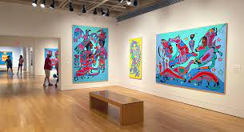

King Framing Art Gallery

For an artist, art is like the asset of his life that he does not
want to lose at any cost. Artists are creative, but, at the same
time, they are sensitive and emotional human beings who can feel
depressed very easily. Even a little mess can upset them and
distract them from what they have been doing. For instance, the
sudden fall off a paint palette which can cause a mess at the
workplace and spoil the mood of the artist.
Creation date:1800
Fry Art Gallery
The Fry Public Art Gallery was opened in 1987 and houses an
impressive number of paintings, prints, illustrations, wallpapers
and decorative designs by artists of the 20th century and the
present day who have local connections and have made a significant
contribution to their field. There is an emphasis on those who for a
variety of reasons settled in Great Bardfield between the early
thirties of the last century and the death in 1983 of John Aldridge
RA who had lived in the village for fifty years.
Creation date:1900
BIENVENIDOS Art GALLERY
CLUES unveiled the CLUES Latino Art Gallery, an innovative
exhibition space dedicated to presenting multidisciplinary art,
performance and public programming by Latino artists. The gallery’s
inaugural exhibition, VisualizArte, opens September 12 and runs
through December 12. Danza Mexica CITLACOATL and Palabristas poetry
group participated at the opening reception.
creation date:1790:
Daniel Faria Gallery
Art galleries in Toronto are hubs of creativity that help support
local artists in your neighbourhood. As one of the biggest cultural
destinations in Canada, the best artists from around the country are
showcasing their work here. Who knows? You might walk into a gallery
and discover the next Tom Thomson or Emily Carr!
creation date:1700
Daniel Faria Gallery
CLUES unveiled the CLUES Latino Art Gallery, an innovative
exhibition space dedicated to presenting multidisciplinary art,
performance and public programming by Latino artists. The gallery’s
inaugural exhibition, VisualizArte, opens September 12 and runs
through December 12. Danza Mexica CITLACOATL and Palabristas poetry
group participated at the opening reception.
creation date:1700
Art gallery of Hamilton

This summer the AGH is honored to present an expanded display of the
permanent #AGHCollection called Where We Lie: Between Sea and Sky.
Get a closer look at this latest update to our Gallery Level 2
installation and take a deep dive into the featured Indigenous
artist Norval Morrisseau (1931 – 2007) with Shivanya Ra, our Pierre
Lassonde Curatorial Intern from Mount Allison University.
creation date:1960